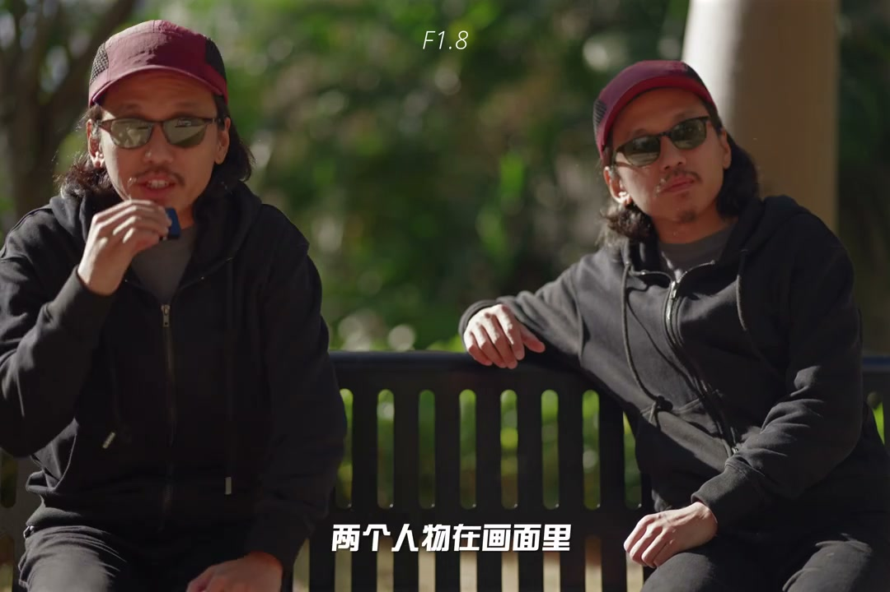
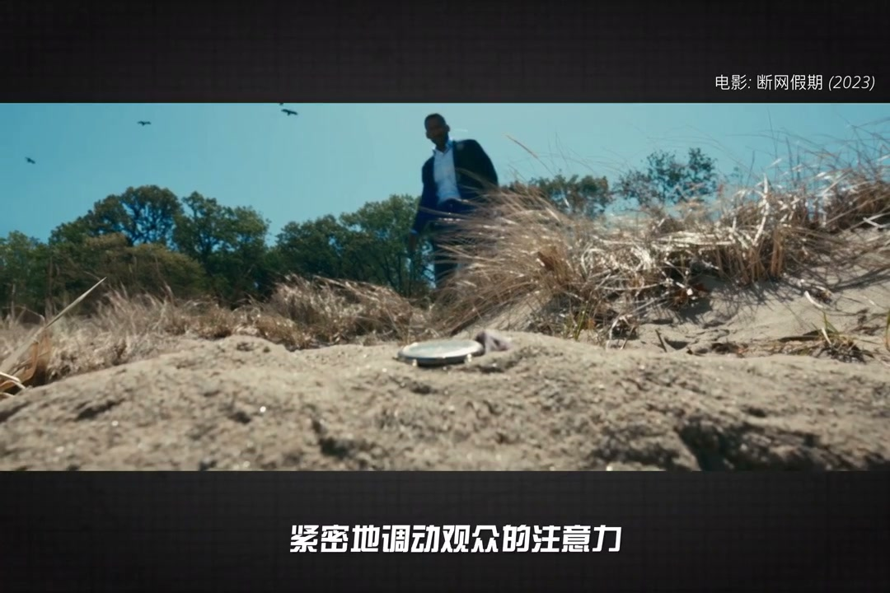
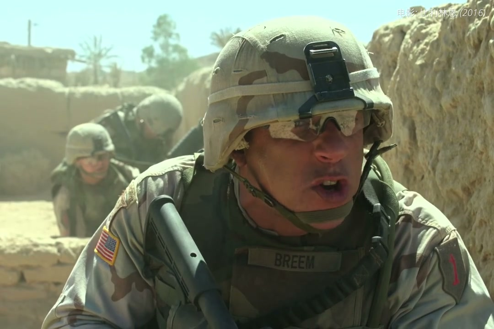
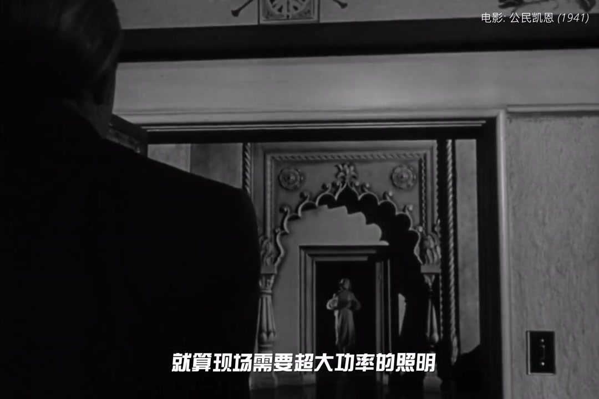
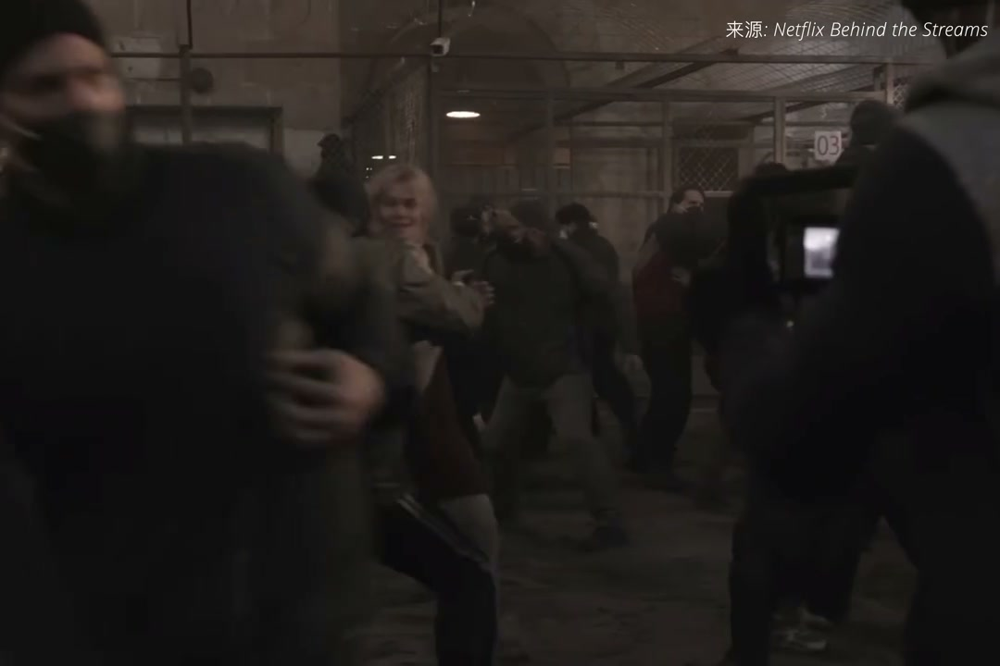

内容要点
[00:00] 曝光3要速过时了吗
[00:01] 上期解释了为了ISO不能调
[00:03] 那光圈快门总能调了吧
[00:05] 很抱歉告诉你
[00:06] 也不可以的
[00:07] 先说光圈
[00:08] 大家最熟悉不过了
[00:09] 打开光圈画面提亮
[00:11] 收起光圈画面变暗
[00:13] 想要最灵活的曝光掌控
[00:14] 前面们苦口婆心
[00:15] 建议你买大光圈牛头
[00:17] 但是电影是一门蓄势的艺术
[00:19] 而不是技术的艺术
[00:20] 调节光圈往往忽略了很重要的代价
[00:23] 那就是景深
[00:24] 光圈越大景深越浅
[00:26] 在剧情表达这一块
[00:27] 景深太重要了
[00:28] 举个简单例子
[00:30] 两个人物在画面里
[00:31] 如果景深太浅
[00:32] 就算两个人物在同一个胶平面
[00:34] 但其中一个人物稍微动一点点
[00:36] 就会虚焦
[00:37] 那么提高景深
[00:39] 就可以给两个人物更多的表演趋域
[00:41] 而且电影拍摄从来不会用自动对焦
[00:44] 跟焦都是活人手动完成
[00:46] 焦点的推拉
[00:47] 紧密的调动观众的注意力
[00:49] 电影的蓄势表达
[00:50] 远比准确性的重要级别高
[00:53] 所以景深太浅
[00:54] 就会成为跟焦员的噩梦
[00:55] 电影拍摄光圈开到T2.8
[00:57] 已经被视为是非常大的光圈
[00:59] 好莱坞确实不法自动跟焦的方案
[01:01] 包括大将也有LIDER跟焦器
[01:04] 但都是为了辅助跟焦员
[01:05] 而不是代替跟焦员的
[01:07] 由于现代内容消费的中端
[01:09] 转站到手机和平板上
[01:11] 屏幕越来越小
[01:12] 背景虚化的呈现难度比大萤幕更高
[01:15] 近年很多导演也开始猛猛开光圈
[01:18] 虚化的背景确实让人陶醉
[01:19] 包括我自己
[01:20] 但对比动不动就光圈全开拍到底
[01:23] 电影依赖景深来展示巨型线索
[01:25] 比如前景和背景
[01:27] 其实都是展示巨型的重要位置
[01:29] 假如只有珠体清晰
[01:31] 前后景就去得一塌糊涂
[01:32] 那么画面的信息量就大大降低了
[01:35] 导演 摄影 美书 灯光
[01:36] 绘画很大的功夫去设计前后景
[01:39] 让影视作品可以做到远近都有戏
[01:42] 经典作品公民凯恩
[01:43] 利用了超景深的摄影手法
[01:45] 开拓出巨大的表演区域
[01:47] 使前后景都能安排演员同时表演
[01:50] 就算现场需要超大功率的照明
[01:52] 也要满足导演对画面的追求
[01:54] 最终成为了经典
[01:56] 反之如果订好了超浅的景深
[01:58] 那么剧组也不会停止折磨更较远
[02:00] 根据光圈曝光和减光
[02:03] 所以光圈在电影拍摄中不只是技术工具
[02:06] 而是艺术蓄势工具
[02:07] 在前期的分镜策划中就进行设计好了的
[02:10] 场地 道具 灯光 演员走位 摄影走位
[02:14] 都紧密的和光圈大小联动在一起
[02:16] 是一个大机器运作中的一环
[02:19] 光圈订好了 画面太暗加灯光
[02:21] 画面太亮加ND
[02:23] 根据现场条件
[02:24] 预计做小范围的改动
[02:25] 情地是不能影响导演预想中的效果
[02:28] 大家感兴趣的话
[02:29] 可以回看我的长视频
[02:30] 大光圈是七彩矮
[02:31] 和拍电影为啥需要更较远
[02:33] OK 感觉书感情人摄影
[02:34] 下期我们聊宽门




